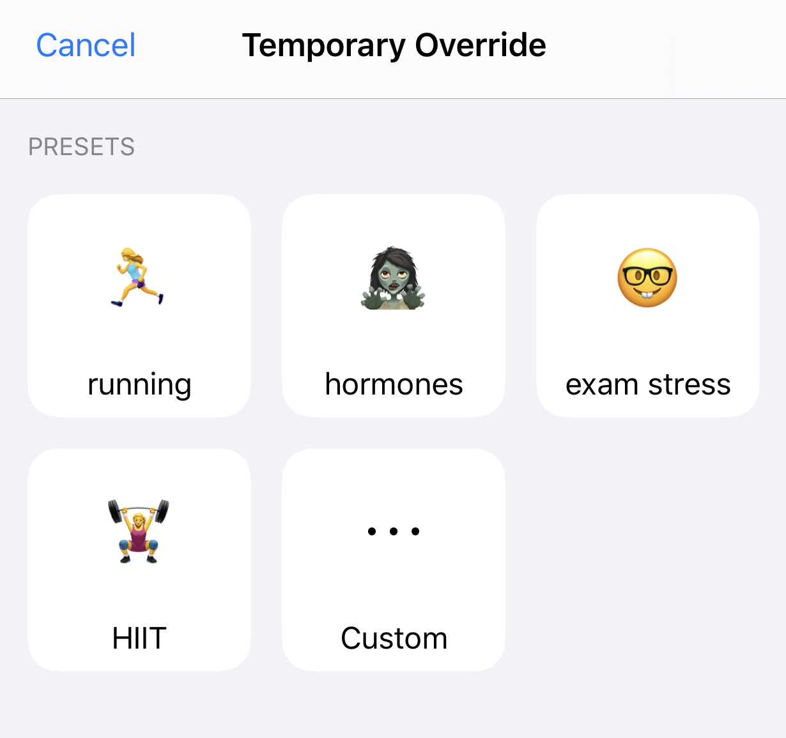

Override Presets⌁
Overrides are a new feature to Loop; currently available on dev branch only. Overrides were developed as a method of more easily letting Loop know that you have a situation which is affecting your overall insulin needs, without needing to manually edit your basal schedule/ISF/carb ratios individually. Examples where this can be helpful include hormone cycles, steroid medications, exercise, and other situations which may temporarily (either shorter or longer term) affect your underlying insulin needs.
Override presets are (1) optional and (2) can be configured within Loop settings. Override presets take the place of the old Workout override. Once override presets are configured in Loop settings, they can be turned on/off by using the old Workout icon (heart icon in the toolbar) on the home screen of Loop.

How overrides work⌁
Overrides allow you to specify an overall iinsulin needs adjustment, a target range, and a duration for the override with each preset. The overall insulin needs adjustment is a multiplier adjustment to your scheduled basal rates, carb ratios, and insulin sensitivities all together. In other words, overall insulin needs percent will affect boluses and temp basal recommendations both.
Notice the fine-print below the orange bar showing the overall adjustment graphic..."Basal, bolus, and correction insulin dose amounts are increased by 20%" in the example with a 120% overall insulin needs adjustment. So, 100% overall needs means no multiplier will be applied to your basal, insulin sensitivities, or carb ratio...but you could still use a 100% preset simply to define a different target range for a period of time.
Recapping: If you set an overall insulin needs adjustment below 100%, you are telling Loop that you are more insulin sensitive and will need a lighter touch with all things insulin. If you set an overall insulin needs adjustment above 100%, you are telling Loop that you are less insulin sensitive and will need a more aggressive touch with all things insulin.

How overrides do NOT work⌁
Overrides will work while you are Looping. Sounds obvious, right? But, the thing to remember is that the adjustments (multipliers) that overrides make are not saved back to your Medtronic pump or Omnipod. They only exist in the Loop app.
If you walk away from iPhone and/or RileyLink...
If you stop Looping (i.e., walk away from your gear), your existing temp basal will complete the remainder of whatever is left of its original 30 minutes and you will return to scheduled basal rates AS DEFINED IN YOUR LOOP SETTINGS. Your adjusted needs as set-up in any override will not continue if your Loop is not running properly. So you cannot set a 50% override and then hop in the ocean for a 2-mile swim without your iPhone and RileyLink and expect decreased basals of 50%. Just be aware that in situations where you need prolonged lower basals while away from Looping gear, you will need to edit your scheduled basals.
Making your override presets⌁
To make your override presets, simply tap on the override presets row in Loop settings' configurations (below the Insulin Sensitivities row). Then click the + sign in the upper right corner to start a new preset entry.
All the rows need to be filled out in the preset in order to save your new preset
- Pick an emoji
- Enter a name for the preset (the default "Running" is just a placeholder)
- Enter an overall insulin needs adjustment (10% to 200% in increments of ten percent, with 100% being your regularly scheduled insulin needs)
- Enter a target range (make sure to enter the target range low-high or you could crash your app...do not enter the range high-low)
- Select whether you want the override to run indefinitely or for a finite time.
When you've made all those adjustments, save the the preset using the "Save" button in the upper right corner.
Activating your override⌁
To enact your override preset, you simply tap on the workout icon in the Loop's main screen toolbar and select your override from your list of presets that you programmed in previously in the step above.

The heart will be highlighted in a blue square while active and a banner notification will appear at the top of the Loop's main screen. Additionally, you'll see a darker blue target area indicating the override's target range and duration in your Loop's blood glucose graph.

Deactivating your override⌁
This is simple...just tap the heart icon to turn off your override at any time. Override presets that have been programmed with a finite duration will automatically deactivate when their time's duration reaches the end.
Remote overrides (in initial testing)⌁
Under very initial testing... You can also use your Nightscout site to activate/deactivate your Loop's override presets. To accomplish this, you will need to do some legwork as outlined on this page for how how to setup Remote Overrides in Nightscout